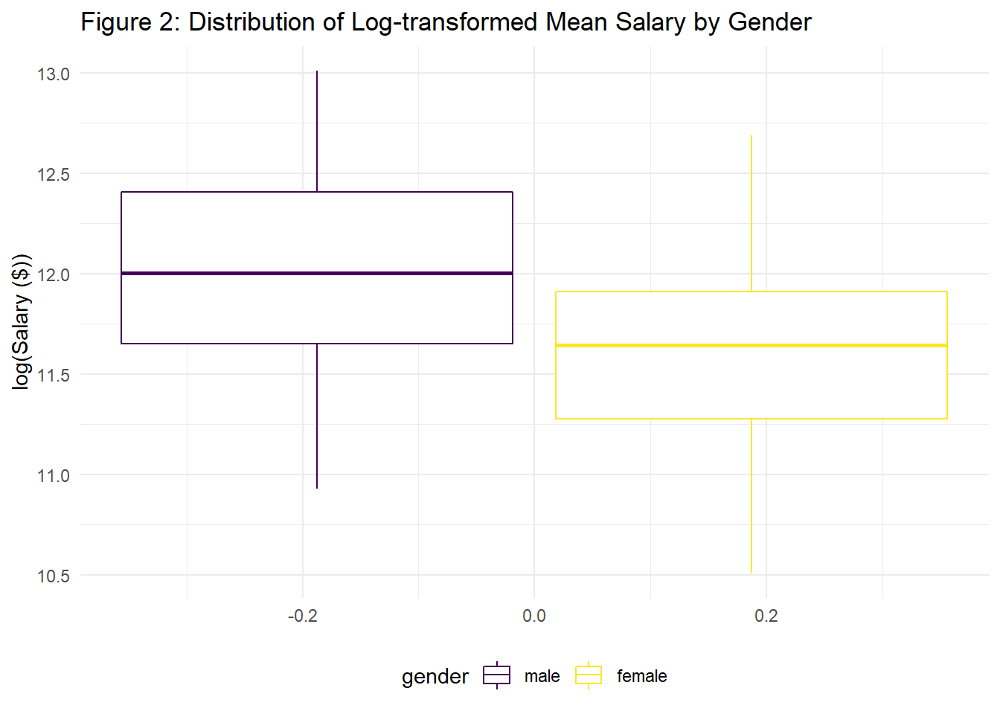
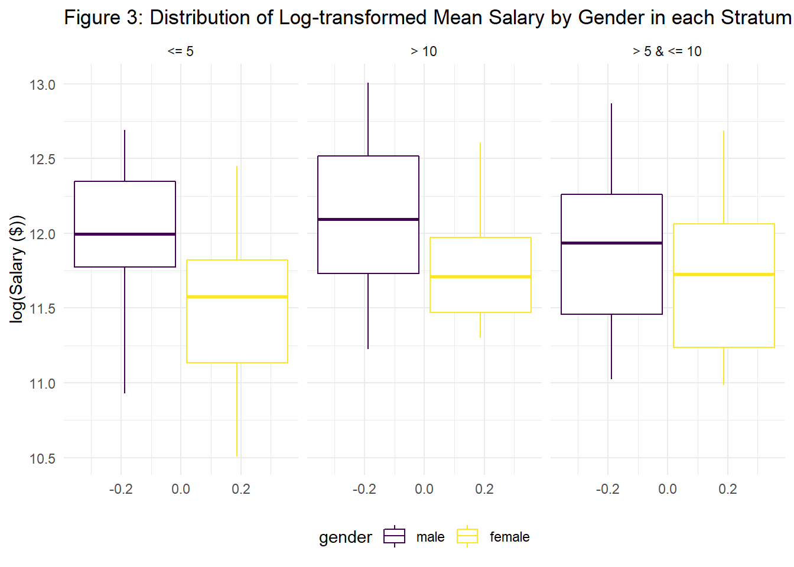

Salary Discrimination in Houston College of Medicine
In this project, a dataset presented in a lawsuit by plaintiffs - female doctors at Houston College of Medicine - was analyzed to verify their claim of gender-based discrimination in salaries. The association between salary and gender was investigated via stratified linear regression analysis, adjusting for several variables.
To do so, the steps are to perform data exploration: descriptive and visualization, and explore the distribution of the outcome, considering potential transformations. Considering confounders and interaction of/with the main covariate of interest, and fitting stratified models. performing Model diagnostics (Heteroscedasticity, normality and multicollinearity), and investigating outliers and influential points.
Methods
Data Description
The data, used in this analysis, was provided by the plaintiffs - female doctors working at Houston College of Medicine who utilized this data set to support their claims of gender discrimination allegedly practiced by said college. The sample contains a total of 261 subjects, both male and female, and was drawn from the faculty at Houston College of Medicine.
The main outcome of interest in this analysis was salary, taken as the average of the salaries from academic years 1994 and 1995. The main predictor of interest was gender. The dataset also contained information on subjects’ publication rates (expressed as the number of publications on CV/number of years between CV date and MD date), years of experience since MD was obtained, department affiliations, faculty rank, board certification status, and whether they worked in research or were engaged in clinical practice.
Statistical Analysis
Exploratory Analysis of the data revealed that a log-transformation of the average salaries from academic years 1994 and 1995 was necessary in order to remove the skewness present in the data (see Figure 1). It was decided to take said average in order to include more information in the model and present a more general picture of this outcome.

After fitting a crude model with the log-transformed mean salary as the outcome and gender as the only independent variable, a multiple linear regression model was fitted using the following independent variables: gender, department, publication rate, certification status, subjects’ working emphasis, experience, and rank. A comparison of the coefficient for gender and its associated p-value in both models revealed that the additional variables included are possible confounders for the relationship between the log-transformed mean salary and gender. However, due to the high VIF of publication rate - indicating serious multicollinearity - this variable was excluded from the model.
Next, possible interaction effects were assessed. A significant interaction between gender and experience was uncovered, which made a stratified analysis necessary. Since experience was a continuous variable, a categorization of the variable experience was performed according to the following rules: subjects with experience less than or equal to five years belonged to the first stratum, subjects with experience of more than five and up to ten years were assigned to the second stratum, and subjects with an experience of more than ten years can be found in the third stratum. Please note that model diagnostics for all three fitted models, one for each stratum, were performed and considered sufficiently good (see appendix).
Results
The sample characteristics are presented in Table 1. The sample consisted of 261 faculty, of which 155 (59.4 %) were male, and 106 (40.6 %) were female. Exploratory data analysis suggested that women might earn less money than men, on average (see Figure 2).
| male (N=155) | female (N=106) | Total (N=261) | |
|---|---|---|---|
| Department | |||
| - Surgery | 35 (22.6%) | 5 (4.7%) | 40 (15.3%) |
| - Biochemistry/Molecular Biology | 30 (19.4%) | 20 (18.9%) | 50 (19.2%) |
| - Genetics | 10 (6.5%) | 11 (10.4%) | 21 (8.0%) |
| - Medicine | 50 (32.3%) | 30 (28.3%) | 80 (30.7%) |
| - Pediatrics | 10 (6.5%) | 20 (18.9%) | 30 (11.5%) |
| - Physiology | 20 (12.9%) | 20 (18.9%) | 40 (15.3%) |
| Emphasis | |||
| - Primarily research | 55 (35.5%) | 46 (43.4%) | 101 (38.7%) |
| - Primarily clinical | 100 (64.5%) | 60 (56.6%) | 160 (61.3%) |
| Certification Status | |||
| - Board certified | 118 (76.1%) | 70 (66.0%) | 188 (72.0%) |
| - not certified | 37 (23.9%) | 36 (34.0%) | 73 (28.0%) |
| Publication rate | |||
| - Mean (SD) | 4.65 (1.94) | 5.35 (1.89) | 4.93 (1.94) |
| - Median (Q1, Q3) | 4.00 (3.10, 6.70) | 5.25 (3.73, 7.27) | 4.40 (3.20, 6.90) |
| - Min - Max | 1.30 - 8.60 | 2.40 - 8.70 | 1.30 - 8.70 |
| # of years experince | |||
| since obtaining MD | |||
| - Mean (SD) | 12.10 (6.70) | 7.49 (4.17) | 10.23 (6.23) |
| - Median (Q1, Q3) | 10.00 (7.00, 15.00) | 7.00 (5.00, 10.00) | 9.00 (6.00, 14.00) |
| - Min - Max | 2.00 - 37.00 | 1.00 - 23.00 | 1.00 - 37.00 |
| Rank | |||
| - Assistant | 43 (27.7%) | 69 (65.1%) | 112 (42.9%) |
| - Associate | 43 (27.7%) | 21 (19.8%) | 64 (24.5%) |
| - Full professor | 69 (44.5%) | 16 (15.1%) | 85 (32.6%) |
| Salary | |||
| (academic year 1994) | |||
| - Mean (SD) | 177338.76 (85930.54) | 118871.27 (56168.01) | 153593.34 (80469.67) |
| - Median (Q1, Q3) | 155006.00 (109687.00, 231501.50) | 108457.00 (75774.50, 143096.00) | 133284.00 (90771.00, 200543.00) |
| - Min - Max | 52582.00 - 428876.00 | 34514.00 - 308081.00 | 34514.00 - 428876.00 |
| Salary | |||
| (academic year 1995) | |||
| - Mean (SD) | 194914.09 (94902.73) | 130876.92 (62034.51) | 168906.66 (88778.43) |
| - Median (Q1, Q3) | 170967.00 (119952.50, 257163.00) | 119135.00 (82345.25, 154170.50) | 148117.00 (99972.00, 218955.00) |
| - Min - Max | 58923.00 - 472589.00 | 38675.00 - 339664.00 | 38675.00 - 472589.00 |

The characteristics of each stratum can be found in tables provided in the appendix. The first stratum consisted of 64 subjects - 22 males (34.4 %) and 42 females (65.6 %). The second stratum was comprised of 97 subjects - 56 males (57.7 %) and 41 females (42.3 %). Finally, the third stratum consisted of 100 subjects - 77 males (77.0 %) and 23 females (23.0 %). Exploratory data analysis suggested that there might be a significant difference in mean salary (log-transformed) by gender in the first and second stratum, but not in the third stratum (see Figure 3).

Linear regression analysis showed that, in the crude model, there was a significant association between gender and the log-transformed mean salary (coefficient = -0.39, p = 5.1e-10 < 0.05) (see Table 2).
| term | estimate | std.error | statistic | p.value |
|---|---|---|---|---|
| (Intercept) | 12.0184986 | 0.0380004 | 316.272884 | 0 |
| genderfemale | -0.3853044 | 0.0596287 | -6.461724 | 0 |
The three adjusted linear regression models - one fitted for each stratum - gave the following results (see Tables 3-5): A significant association (coefficient = -0.13, p = 0.0238 < 0.05) between gender and the log-transformed mean salary was found in the first stratum (experience <= 5 years), and no significant associations between gender and the log-transformed mean salary were found in second stratum (5 < years of experience <= 10) and in the third stratum (>10 years of experience) (p > 0.05), controlling for above mentioned variables.
| term | estimate | std.error | statistic | p.value |
|---|---|---|---|---|
| (Intercept) | 12.3090987 | 0.0893491 | 137.7640730 | 0.0000000 |
| genderfemale | -0.1257741 | 0.0540886 | -2.3253341 | 0.0238410 |
| deptBiochemistry/Molecular Biology | -1.0589394 | 0.1546548 | -6.8471161 | 0.0000000 |
| deptGenetics | -0.7849003 | 0.1094759 | -7.1696153 | 0.0000000 |
| deptMedicine | -0.3823906 | 0.0738507 | -5.1778865 | 0.0000034 |
| deptPediatrics | -0.7009574 | 0.0845709 | -8.2883957 | 0.0000000 |
| deptPhysiology | -1.2159061 | 0.0943909 | -12.8815989 | 0.0000000 |
| clinPrimarily clinical | 0.1188930 | 0.0620500 | 1.9160830 | 0.0606545 |
| certnot certified | -0.1168796 | 0.0529226 | -2.2085010 | 0.0314743 |
| rankAssociate | 0.0304415 | 0.0877100 | 0.3470702 | 0.7298875 |
| term | estimate | std.error | statistic | p.value |
|---|---|---|---|---|
| (Intercept) | 12.2166862 | 0.0476936 | 256.1494269 | 0.0000000 |
| genderfemale | -0.0146175 | 0.0252336 | -0.5792884 | 0.5639089 |
| deptBiochemistry/Molecular Biology | -0.9218873 | 0.0533390 | -17.2835567 | 0.0000000 |
| deptGenetics | -0.7788346 | 0.0574168 | -13.5645702 | 0.0000000 |
| deptMedicine | -0.4010405 | 0.0384379 | -10.4334607 | 0.0000000 |
| deptPediatrics | -0.7059193 | 0.0472597 | -14.9370197 | 0.0000000 |
| deptPhysiology | -1.1230270 | 0.0525259 | -21.3804267 | 0.0000000 |
| clinPrimarily clinical | 0.2449037 | 0.0344593 | 7.1070521 | 0.0000000 |
| certnot certified | -0.1528088 | 0.0331427 | -4.6106365 | 0.0000139 |
| rankAssociate | 0.1682590 | 0.0277366 | 6.0663255 | 0.0000000 |
| rankFull professor | 0.2409081 | 0.0322452 | 7.4711222 | 0.0000000 |
| term | estimate | std.error | statistic | p.value |
|---|---|---|---|---|
| (Intercept) | 12.3996811 | 0.0587725 | 210.9777759 | 0.0000000 |
| genderfemale | -0.0207339 | 0.0372841 | -0.5561066 | 0.5795335 |
| deptBiochemistry/Molecular Biology | -0.9058780 | 0.0535974 | -16.9015363 | 0.0000000 |
| deptGenetics | -0.7577260 | 0.0659384 | -11.4914188 | 0.0000000 |
| deptMedicine | -0.4187279 | 0.0448320 | -9.3399378 | 0.0000000 |
| deptPediatrics | -0.7645256 | 0.0709795 | -10.7710780 | 0.0000000 |
| deptPhysiology | -1.0327933 | 0.0556724 | -18.5512502 | 0.0000000 |
| clinPrimarily clinical | 0.2185586 | 0.0342499 | 6.3812981 | 0.0000000 |
| certnot certified | -0.2494152 | 0.0374808 | -6.6544706 | 0.0000000 |
| rankAssociate | 0.1421898 | 0.0536860 | 2.6485454 | 0.0095633 |
| rankFull professor | 0.2543848 | 0.0500792 | 5.0796533 | 0.0000021 |
Discussion
This analysis was conducted to investigate whether the data provided support the claim of the plaintiffs concerning gender discrimination in setting salaries at Houston College of Medicine. Controlling for rank, certification status, department affiliation, and subjects’ working emphasis, the association between gender and the log-transformed mean salaries of academic years 1994 and 1995 were analyzed using linear regression stratified by years of experience: less than or equal to five years, more than five and up to ten years, and more than ten years.
Controlling for variables mentioned above, only in the first stratum was a significant association between the log-transformed mean salary and gender observed (coefficient = -0.13, p = 0.0238), i.e., on average, the mean income of women was about ~88% of the salary of men in this stratum.
As it has been shown in the introduction, different studies have adjusted for different variables and all of them in the similar context of medical field have shown a significant association between gender and salary. Referring to our analysis results, however, it appears as if women face gender disparities in terms of monetary compensation at the start of their careers at Houston College of Medicine, adjusting for similar variables, and once they have established their position in the field, it seems that gender has no direct impact on their salaries anymore.**
**Previously, a study of 24 different public medical schools in the United States was mentioned, which found a significant gender difference in the annual salary of male and female physicians, after controlling for age, experience, specialty, rank, and measures of research productivity and clinical revenue [1]. This study, which adjusted for similar variables as the analysis presented here, is only one of many whose conclusions do not align with our findings. It appears as if women face gender disparities in terms of monetary compensation at the start of their careers at Houston College of Medicine. However, once they established their position in the field, it seems as if gender has no direct impact on their salaries anymore.
This dataset and analysis have several limitations. First and foremost, neither the race nor the administrative position was recorded. People with additional administrative roles would most certainly be better compensated, and potential racial disparities could also account for differences in salaries among doctors. Moreover, after stratification, the sample size for each stratum was rather small. This issue was worsened by the large numbers of indicator variables introduced by the categorical variables. Consequently, caution should be exercised in interpreting the results. Finally, caution should also be exercised when generalizing the presented conclusions to the general medical field. This data set served a specific purpose of demonstrating gender discrimination at Houston College of Medicine, and therefore, only represents the population of said institute at best. On top of that, the dataset only contains salaries from the academic years 1994 and 1995. Hence, it is unlikely that the data reflect the current landscape of gender discrimination in salaries in the medical field.
It should be noted that there were two influential observations present in the first stratum whose exclusion changed the outcome of the regression analysis dramatically. Moreover, there was an influential point in the third stratum whose effect, however, was less severe (see appendix for further information).
In conclusion, the findings of this analysis partially support the claims of gender discrimination in salaries: Female doctors with up to five years of experience do earn only about 88% of the salary of their male counterparts, on average.
Appendix
Charateristics of the Three Strata
| male (N=22) | female (N=42) | Total (N=64) | |
|---|---|---|---|
| Department | |||
| - Surgery | 7 (31.8%) | 2 (4.8%) | 9 (14.1%) |
| - Biochemistry/Molecular Biology | 0 (0.0%) | 2 (4.8%) | 2 (3.1%) |
| - Genetics | 2 (9.1%) | 3 (7.1%) | 5 (7.8%) |
| - Medicine | 10 (45.5%) | 13 (31.0%) | 23 (35.9%) |
| - Pediatrics | 1 (4.5%) | 12 (28.6%) | 13 (20.3%) |
| - Physiology | 2 (9.1%) | 10 (23.8%) | 12 (18.8%) |
| Emphasis | |||
| - Primarily research | 2 (9.1%) | 15 (35.7%) | 17 (26.6%) |
| - Primarily clinical | 20 (90.9%) | 27 (64.3%) | 47 (73.4%) |
| Certification Status | |||
| - Board certified | 16 (72.7%) | 26 (61.9%) | 42 (65.6%) |
| - not certified | 6 (27.3%) | 16 (38.1%) | 22 (34.4%) |
| Publication rate | |||
| - Mean (SD) | 3.32 (1.29) | 4.97 (1.83) | 4.40 (1.83) |
| - Median (Q1, Q3) | 3.00 (2.42, 3.80) | 4.15 (3.70, 6.45) | 3.85 (3.08, 5.43) |
| - Min - Max | 1.90 - 7.00 | 2.40 - 8.40 | 1.90 - 8.40 |
| # of years experince | |||
| since obtaining MD | |||
| - Mean (SD) | 4.36 (1.09) | 3.69 (1.30) | 3.92 (1.26) |
| - Median (Q1, Q3) | 5.00 (4.00, 5.00) | 4.00 (3.00, 5.00) | 4.00 (3.00, 5.00) |
| - Min - Max | 2.00 - 5.00 | 1.00 - 5.00 | 1.00 - 5.00 |
| Rank | |||
| - Assistant | 19 (86.4%) | 40 (95.2%) | 59 (92.2%) |
| - Associate | 3 (13.6%) | 2 (4.8%) | 5 (7.8%) |
| - Full professor | 0 (0.0%) | 0 (0.0%) | 0 (0.0%) |
| Salary | |||
| (academic year 1994) | |||
| - Mean (SD) | 168756.41 (66131.53) | 103597.67 (46035.59) | 125995.98 (61724.94) |
| - Median (Q1, Q3) | 153929.50 (125338.25, 219326.25) | 102099.00 (65781.00, 128206.00) | 121210.00 (75666.25, 153739.25) |
| - Min - Max | 52582.00 - 312966.00 | 34514.00 - 244551.00 | 34514.00 - 312966.00 |
| Salary | |||
| (academic year 1995) | |||
| - Mean (SD) | 184452.95 (71494.82) | 113780.26 (50524.05) | 138074.00 (67154.35) |
| - Median (Q1, Q3) | 169837.00 (134518.75, 241235.25) | 111301.00 (71853.25, 143811.25) | 130826.50 (83314.75, 169272.00) |
| - Min - Max | 58923.00 - 336960.00 | 38675.00 - 265502.00 | 38675.00 - 336960.00 |
| male (N=56) | female (N=41) | Total (N=97) | |
|---|---|---|---|
| Department | |||
| - Surgery | 11 (19.6%) | 3 (7.3%) | 14 (14.4%) |
| - Biochemistry/Molecular Biology | 13 (23.2%) | 9 (22.0%) | 22 (22.7%) |
| - Genetics | 2 (3.6%) | 7 (17.1%) | 9 (9.3%) |
| - Medicine | 17 (30.4%) | 12 (29.3%) | 29 (29.9%) |
| - Pediatrics | 6 (10.7%) | 5 (12.2%) | 11 (11.3%) |
| - Physiology | 7 (12.5%) | 5 (12.2%) | 12 (12.4%) |
| Emphasis | |||
| - Primarily research | 23 (41.1%) | 19 (46.3%) | 42 (43.3%) |
| - Primarily clinical | 33 (58.9%) | 22 (53.7%) | 55 (56.7%) |
| Certification Status | |||
| - Board certified | 41 (73.2%) | 27 (65.9%) | 68 (70.1%) |
| - not certified | 15 (26.8%) | 14 (34.1%) | 29 (29.9%) |
| Publication rate | |||
| - Mean (SD) | 4.88 (1.98) | 5.35 (1.94) | 5.08 (1.97) |
| - Median (Q1, Q3) | 4.35 (3.10, 6.85) | 5.10 (3.70, 7.30) | 4.70 (3.20, 7.10) |
| - Min - Max | 1.30 - 8.30 | 2.60 - 8.50 | 1.30 - 8.50 |
| # of years experince | |||
| since obtaining MD | |||
| - Mean (SD) | 8.23 (1.43) | 7.85 (1.44) | 8.07 (1.44) |
| - Median (Q1, Q3) | 8.00 (7.00, 10.00) | 8.00 (7.00, 9.00) | 8.00 (7.00, 9.00) |
| - Min - Max | 6.00 - 10.00 | 6.00 - 10.00 | 6.00 - 10.00 |
| Rank | |||
| - Assistant | 19 (33.9%) | 23 (56.1%) | 42 (43.3%) |
| - Associate | 20 (35.7%) | 13 (31.7%) | 33 (34.0%) |
| - Full professor | 17 (30.4%) | 5 (12.2%) | 22 (22.7%) |
| Salary | |||
| (academic year 1994) | |||
| - Mean (SD) | 152811.66 (74939.05) | 126234.95 (61698.25) | 141578.21 (70552.73) |
| - Median (Q1, Q3) | 145022.50 (90112.50, 201515.50) | 118101.00 (71015.00, 164080.00) | 129499.00 (81769.00, 175791.00) |
| - Min - Max | 58126.00 - 366150.00 | 56177.00 - 308081.00 | 56177.00 - 366150.00 |
| Salary | |||
| (academic year 1995) | |||
| - Mean (SD) | 168902.80 (84215.35) | 139517.66 (68361.46) | 156482.28 (78888.29) |
| - Median (Q1, Q3) | 160163.50 (98026.25, 221333.25) | 129862.00 (80294.00, 180937.00) | 141661.00 (91369.00, 195678.00) |
| - Min - Max | 64522.00 - 408898.00 | 61652.00 - 339664.00 | 61652.00 - 408898.00 |
| male (N=22) | female (N=42) | Total (N=64) | |
|---|---|---|---|
| Department | |||
| - Surgery | 7 (31.8%) | 2 (4.8%) | 9 (14.1%) |
| - Biochemistry/Molecular Biology | 0 (0.0%) | 2 (4.8%) | 2 (3.1%) |
| - Genetics | 2 (9.1%) | 3 (7.1%) | 5 (7.8%) |
| - Medicine | 10 (45.5%) | 13 (31.0%) | 23 (35.9%) |
| - Pediatrics | 1 (4.5%) | 12 (28.6%) | 13 (20.3%) |
| - Physiology | 2 (9.1%) | 10 (23.8%) | 12 (18.8%) |
| Emphasis | |||
| - Primarily research | 2 (9.1%) | 15 (35.7%) | 17 (26.6%) |
| - Primarily clinical | 20 (90.9%) | 27 (64.3%) | 47 (73.4%) |
| Certification Status | |||
| - Board certified | 16 (72.7%) | 26 (61.9%) | 42 (65.6%) |
| - not certified | 6 (27.3%) | 16 (38.1%) | 22 (34.4%) |
| Publication rate | |||
| - Mean (SD) | 3.32 (1.29) | 4.97 (1.83) | 4.40 (1.83) |
| - Median (Q1, Q3) | 3.00 (2.42, 3.80) | 4.15 (3.70, 6.45) | 3.85 (3.08, 5.43) |
| - Min - Max | 1.90 - 7.00 | 2.40 - 8.40 | 1.90 - 8.40 |
| # of years experince | |||
| since obtaining MD | |||
| - Mean (SD) | 4.36 (1.09) | 3.69 (1.30) | 3.92 (1.26) |
| - Median (Q1, Q3) | 5.00 (4.00, 5.00) | 4.00 (3.00, 5.00) | 4.00 (3.00, 5.00) |
| - Min - Max | 2.00 - 5.00 | 1.00 - 5.00 | 1.00 - 5.00 |
| Rank | |||
| - Assistant | 19 (86.4%) | 40 (95.2%) | 59 (92.2%) |
| - Associate | 3 (13.6%) | 2 (4.8%) | 5 (7.8%) |
| - Full professor | 0 (0.0%) | 0 (0.0%) | 0 (0.0%) |
| Salary | |||
| (academic year 1994) | |||
| - Mean (SD) | 168756.41 (66131.53) | 103597.67 (46035.59) | 125995.98 (61724.94) |
| - Median (Q1, Q3) | 153929.50 (125338.25, 219326.25) | 102099.00 (65781.00, 128206.00) | 121210.00 (75666.25, 153739.25) |
| - Min - Max | 52582.00 - 312966.00 | 34514.00 - 244551.00 | 34514.00 - 312966.00 |
| Salary | |||
| (academic year 1995) | |||
| - Mean (SD) | 184452.95 (71494.82) | 113780.26 (50524.05) | 138074.00 (67154.35) |
| - Median (Q1, Q3) | 169837.00 (134518.75, 241235.25) | 111301.00 (71853.25, 143811.25) | 130826.50 (83314.75, 169272.00) |
| - Min - Max | 58923.00 - 336960.00 | 38675.00 - 265502.00 | 38675.00 - 336960.00 |
Model Diagnostics for each model fit in the Stratified Analysis
Add plots that show the linear relationship between continuous preditors and the log transformed outcome
We performed model diagnostics for each of the models fit in the stratified analysis.
In the first stratum we found the following:
| Outlier in X (id) | Outlier in Y (id) | Possible Influential Point (id) |
|---|---|---|
| 31, 38, 63, 69, 93, 99, | 184 | 184, 252 |
| 106, 107, 111, 125,137, | ||
| 184, 228, 243, 252 |
The following plots illustrate that the model assumptions are satisfied well enough:

In the second stratum we found the following:
| Outlier in X (id) | Outlier in Y (id) | Possible Influential Point (id) |
|---|---|---|
| 74, 100, 105, 116 | 43 | none |
The following plots illustrate that the model assumptions are satisfied well enough:

In the third stratum we found the following:
| Outlier in X (id) | Outlier in Y (id) | Possible Influential Point (id) |
|---|---|---|
| 92, 94, 109, 113, | 58 | 58 |
| 115, 120, 127, 133,135 |
The following plots illustrate that the model assumptions are satisfied well enough:

Note: This was a group project done collaboratively with Daniela Quigee and Hao Sun who are also Mailman SPH students.